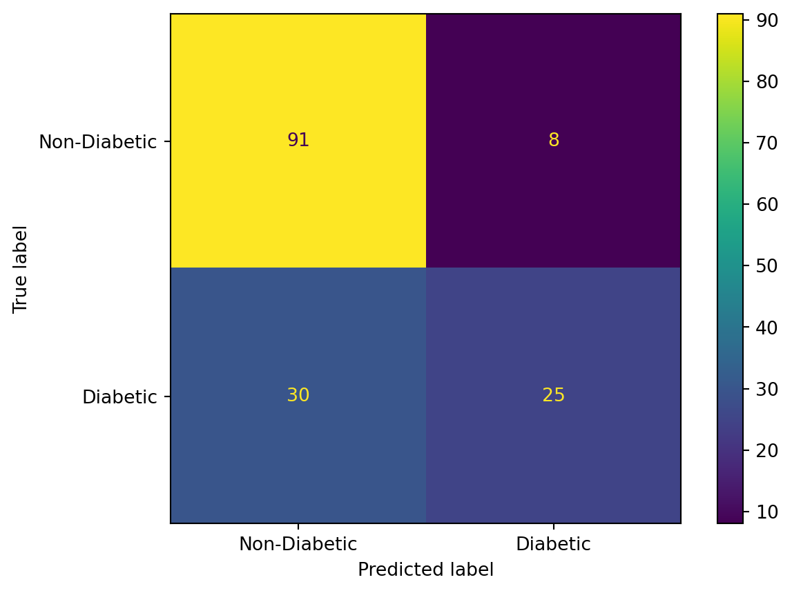
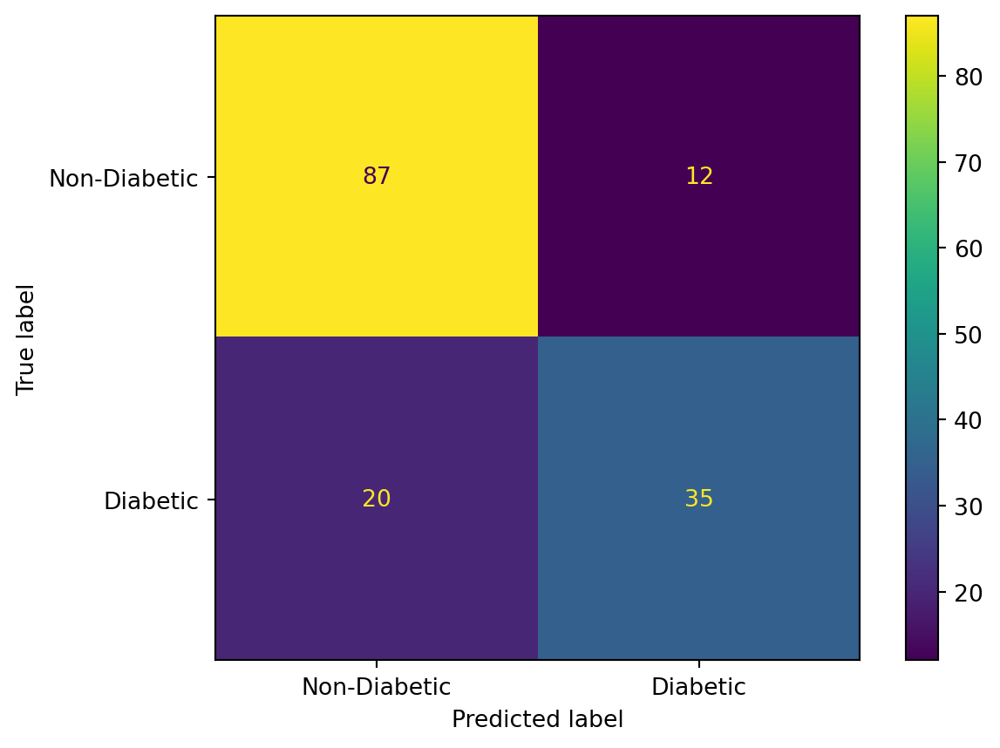
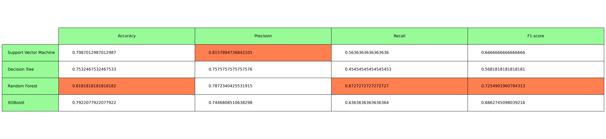

Supervised learning, also known as supervised machine learning, is a subcategory of machine learning and artificial intelligence. It is defined by its use of labeled datasets to train algorithms that to classify data or predict outcomes accurately.
Classification uses machine learning algorithms that learn how to assign a class label to examples from the problem domain. The class labels are a set of discrete values. A model will use the training dataset and will calculate how to best map examples of input data to specific class labels. As such, the training dataset must be sufficiently representative of the problem and have many examples of each class label. Based on the set of class labels, classification can be binary classification (2 class labels) or multi-class classification (>2 class labels). You can read more on classification here!.
In this blog, we will be dealing with binary classification on the Pima Indian Diabetes dataet from the UCI Machine Learning Repository. This dataset is originally from the National Institute of Diabetes and Digestive and Kidney Diseases. The objective of the dataset is to diagnostically predict whether or not a patient has diabetes, based on certain diagnostic measurements included in the dataset. The datasets consists of several medical predictor variables and one target variable, Outcome. Predictor variables includes the number of pregnancies the patient has had, their BMI, insulin level, age, and so on.
Below, we can see a sample of the dataset chosen.
Code
import pandas as pdimport numpy as npimport warningswarnings.filterwarnings("ignore")df_diabetes = pd.read_csv("diabetes.csv")df_diabetes.head(10)
Pregnancies
Glucose
BloodPressure
SkinThickness
Insulin
BMI
DiabetesPedigreeFunction
Age
Outcome
0
6
148
72
35
0
33.6
0.627
50
1
1
1
85
66
29
0
26.6
0.351
31
0
2
8
183
64
0
0
23.3
0.672
32
1
3
1
89
66
23
94
28.1
0.167
21
0
4
0
137
40
35
168
43.1
2.288
33
1
5
5
116
74
0
0
25.6
0.201
30
0
6
3
78
50
32
88
31.0
0.248
26
1
7
10
115
0
0
0
35.3
0.134
29
0
8
2
197
70
45
543
30.5
0.158
53
1
9
8
125
96
0
0
0.0
0.232
54
1
We can plot the correlation between the features(columns) and in the chart below, we can see which features have a higher correlation with the tagret variable.
We can view the info about the data. We see that there are no null values but there are columns having 0 values which are missing values. It is important to handle missing data and prepare it well before it is processed through the classification model.
We convert the missing values into Nan values so that we can apply the K nearest neighbours imputation algorithm.
Code
# storing outcomes in dataframe y, and storing pregnancies in a separate list temporarily# instead of creating a copy of another dataframepregnancies = df_diabetes['Pregnancies']y = df_diabetes['Outcome']df_diabetes = df_diabetes.drop(columns=['Pregnancies', 'Outcome'])# making the 0 missing values into Nan values for imputingdf_diabetes.replace(0, np.nan, inplace=True)print(f"Number of missing values = {np.isnan(df_diabetes.to_numpy()).sum()}")df_diabetes['Pregnancies'] = pregnanciescolumns = df_diabetes.columnsdf_diabetes.head(5)
Number of missing values = 652
Glucose
BloodPressure
SkinThickness
Insulin
BMI
DiabetesPedigreeFunction
Age
Pregnancies
0
148.0
72.0
35.0
NaN
33.6
0.627
50
6
1
85.0
66.0
29.0
NaN
26.6
0.351
31
1
2
183.0
64.0
NaN
NaN
23.3
0.672
32
8
3
89.0
66.0
23.0
94.0
28.1
0.167
21
1
4
137.0
40.0
35.0
168.0
43.1
2.288
33
0
Before imputing the data, we: 1. Split the data into train-test split 2. Scale the training data and the testing data separately.
The reason for splitting the data and then scaling it and then applying imputation is so that there is no data leakage between the train-test datasets. Since data leakage can make our model biased leading to incorrect results and inaccurate evaluation metric scores.
The training set and the test set are then imputed separately with the KNNImputer with 5 neighbours. Imputation for completing missing values using k-Nearest Neighbors. Each sample’s missing values are imputed using the mean value from n_neighbors nearest neighbors found in the training set. Two samples are close if the features that neither is missing are close.
from sklearn.model_selection import train_test_splitfrom sklearn.preprocessing import StandardScalery = yX = (df_diabetes).to_numpy()# 80-20 Train-Test splitX_train, X_test, y_train, y_test = train_test_split(X, y, test_size=0.2, random_state=1) scaling_x=StandardScaler()X_train=scaling_x.fit_transform(X_train)X_test=scaling_x.transform(X_test)# Imputing missing values using knn# knn imputation transform for the datasetfrom sklearn.impute import KNNImputer# print total missingprint('Missing: %d'%sum(np.isnan(X).flatten()))# define imputerimputer = KNNImputer(n_neighbors=5) # taking 5 neighbours# fit transform on the dataset for training and testing setX_train_imputed = imputer.fit_transform(X_train)X_test_imputed = imputer.transform(X_test)# print total missingX_trans = np.concatenate((X_train_imputed, X_test_imputed), axis=0)print('Missing: %d'%sum(np.isnan(X_trans).flatten()))
Missing: 652
Missing: 0
We can see, all values have been normalized and there are no missing values in the dataset.
We can now begin classification and compare various popular classification models such as Support Vector Machines (SVM), Decision Trees (DT), Random Forest (RF), and XGBoost (XGB). We also explore some hyperparameter tuning parameters and compare all the models on their performance on this dataset. Hyperparameter tuning relies more on experimental results than theory, and thus the best method to determine the optimal settings is to try many different combinations evaluate the performance of each model.
The evaluation metrics are: 1. Accuracy: Accuracy is a measure of overall correctness and is calculated as the ratio of correctly predicted instances to the total number of instances in the dataset. \(Accuracy = \frac{True Positive + True Negative}{True Positive + True Negative + False Positive + False Negative}\)
Precision: Precision is the ratio of correctly predicted positive instances to the total predicted positive instances. It measures the accuracy of positive predictions. \(Precision = \frac{True Positive}{ True Positive + False Positive}\)
Recall: Recall is the ratio of correctly predicted positive instances to the total actual positive instances. It measures the model’s ability to capture all positive instances. \(Recall (Sensitivity) = \frac{True Positive}{ True Positive + False Negative}\)
F1 score: The F1 score is the harmonic mean of precision and recall. It provides a balance between precision and recall, especially useful when the class distribution is imbalanced. \(F1 = \frac{2*Precision*Recall}{ Precision + Recall}\)
where TP and TN define the samples labeled correctly as the positive class or negative class, FP define the samples falsely labeled as positive and FN define the samples falsely labeled as negative.
Support Vector Machines (SVM) is a supervised machine learning algorithm used for classification and regression tasks. SVM works by finding a hyperplane in a high-dimensional space that best separates the data points of different classes. The “support vectors” are the data points closest to the decision boundary, and the margin is the distance between the support vectors and the decision boundary. SVM aims to maximize this margin, providing robust generalization to unseen data. SVM is considered a linear classifier but it can handle non-linear relationships through the use of kernel functions, allowing it to map input data into a higher-dimensional space. SVM is particularly effective in high-dimensional spaces and is widely used in various applications, including image classification and text categorization. In the code, we make use of the scikit-learn library for the SVM implementation. The parameter information can be found in the implementation page.
SVM classifier
Accuracy: 0.7987012987012987
F1 score: 0.6666666666666666
Decision Tree Classification
Decision Trees are a non-linear, hierarchical model that partitions the input space into regions and assigns a class label or regression value to each region. The tree structure is built by recursively splitting the data based on the most informative features at each node. A common splitting technique is using the impurity measure to decide whether the branch must be split or not. Decision Trees are interpretable, easy to visualize, and capable of handling both categorical and numerical features. However, they are prone to overfitting, especially when deep trees are constructed. Techniques like pruning and limiting tree depth help mitigate overfitting and improve generalization. In the code, we make use of the scikit-learn library for the Decision Tree implementation. The parameter information can be found in the implementation page.
Grid-Search Hyperparameter tuning
GridSearchCV, a method that, instead of sampling randomly from a distribution, evaluates all combinations of parameters we define. In the code, we make use of the scikit-learn library for the GridSearchCV implementation. The parameter information can be found in the implementation page.
from sklearn.tree import DecisionTreeClassifierfrom sklearn.model_selection import GridSearchCVmodel_names.append('Decision Tree')dt = DecisionTreeClassifier()print("Current params:")pprint(dt.get_params())dt.fit(X_train_imputed, y_train)params = {'max_depth': [None, 5, 10, 15],'min_samples_split': [2, 5, 10],'min_samples_leaf': range(1, 5),'max_features': ['auto', 'sqrt', 'log2', None],'criterion': ['gini', 'entropy'],}grid_search_dt = GridSearchCV(dt, params, cv=3, scoring='accuracy')# Fit the model to the data and perform hyperparameter tuninggrid_search_dt.fit(X_train_imputed, y_train)# Print the best hyperparametersprint("Best Hyperparameters:")pprint(grid_search_dt.best_params_)# Get the best modelbest_model_dt = grid_search_dt.best_estimator_y_pred = dt.predict(X_test_imputed)y_pred_best = best_model_dt.predict(X_test_imputed)best_preds.append([accuracy_score(y_test, y_pred_best), precision_score(y_test, y_pred_best), recall_score(y_test, y_pred_best), f1_score(y_test, y_pred_best)])
DT without hyperparameter tuning
Accuracy: 0.6883116883116883
F1 score: 0.5636363636363636
DT with hyperparameter tuning
Accuracy: 0.7337662337662337
F1 score: 0.5684210526315789

Random Forest Classification
Random Forest is an ensemble learning method that builds a multitude of decision trees during training and outputs the mode of the classes for classification tasks or the average prediction for regression tasks. Each tree in the forest is constructed using a random subset of the training data and a random subset of features. The randomness and diversity among trees help mitigate overfitting and improve overall model accuracy. Random Forest is known for its robustness, versatility, and effectiveness in handling high-dimensional data. In the code, we make use of the scikit-learn library for the Random Forest implementation. The parameter information can be found in the implementation page.
RandomSearch Hyperparameter tuning
RandomizedSearchCV, a method that, sample randomly from a distribution and evaluates the randomly chosen of parameters we define. In contrast to GridSearchCV, not all parameter values are tried out, but rather a fixed number of parameter settings is sampled from the specified distributions. The number of parameter settings that are tried is given by n_iter. In the code, we make use of the scikit-learn library for the RandomizedSearchCV implementation. The parameter information can be found in the implementation page.
from sklearn.ensemble import RandomForestClassifierfrom sklearn.model_selection import RandomizedSearchCVmodel_names.append('Random Forest')rf = RandomForestClassifier()print("Current params:")pprint(rf.get_params())rf.fit(X_train_imputed, y_train)max_depth = [int(x) for x in np.linspace(10, 110, num =11)]max_depth.append(None)# Create the random gridrandom_grid = {'n_estimators': [int(x) for x in np.linspace(start =200, stop =2000, num =10)],'max_features': ['auto', 'sqrt'],'max_depth': max_depth,'min_samples_split': [2, 5, 10],'min_samples_leaf': [1, 2, 4],'bootstrap': [True, False]}rf_random = RandomizedSearchCV(estimator = rf, param_distributions = random_grid, n_iter =100, cv =3, verbose=2, random_state=42, n_jobs =-1)# Fit the random search modelrf_random.fit(X_train_imputed, y_train)# Print the best hyperparametersprint("Best Hyperparameters:")pprint(rf_random.best_params_)# Get the best modelbest_model_rf = rf_random.best_estimator_y_pred = rf.predict(X_test_imputed)y_pred_best = best_model_rf.predict(X_test_imputed)best_preds.append([accuracy_score(y_test, y_pred_best), precision_score(y_test, y_pred_best), recall_score(y_test, y_pred_best), f1_score(y_test, y_pred_best)])
RF without hyperparameter tuning
Accuracy: 0.8051948051948052
F1 score: 0.7058823529411765
RF with hyperparameter tuning
Accuracy: 0.8051948051948052
F1 score: 0.7000000000000001
XGBoost
XGBoost, or Extreme Gradient Boosting, is a machine learning algorithm renowned for its efficiency and performance in predictive modeling tasks. It belongs to the ensemble learning family and is an extension of traditional gradient boosting methods. The core idea behind XGBoost is the sequential addition of weak learners, often decision trees, which are trained to correct errors made by preceding models. XGBoost introduces several key innovations, including regularization techniques to prevent overfitting, parallelized tree construction for faster training, and gradient-based optimization for rapid convergence. At its core, XGBoost structures its ensemble as a collection of decision trees, each contributing to the final prediction. So, gradient boosting is in the form of ensemble of weak prediction models. The algorithm assigns weights to the misclassified instances in each iteration, adjusting subsequent trees to focus on the previously misclassified samples. During training, XGBoost uses gradient-based optimization to efficiently navigate the solution space and arrive at an ensemble of trees that collectively delivers a robust and accurate prediction.
In the code, we make use of the XGBoost library for the XGBoost implementation. The parameter information can be found in the implementation page.
BayesSearch Hyperparameter tuning
Bayesian optimization is a more sophisticated technique that uses Bayesian methods to model the underlying function that maps hyperparameters to the model performance. It tries to find the optimal set of hyperparameters by making smart guesses based on the previous results. Bayesian optimization is more efficient than grid or random search because it attempts to balance exploration and exploitation of the search space. It can also deal with the cases of large number of hyperparameters and large search space. However, it can be more difficult to implement than grid search or random search and may require more computational resources.
In the code, we make use of the skopt library for the BayesSearchCV implementation. The parameter information can be found in the implementation page.
from xgboost import XGBClassifierfrom skopt import BayesSearchCVmodel_names.append('XGBoost')# Create an XGBoost classifierxgb = XGBClassifier()print("Current params:")pprint(xgb.get_params())xgb.fit(X_train_imputed, y_train)# Define the parameter search spaceparam_space = {'max_depth': (3, 10),'learning_rate': (0.01, 1.0, 'log-uniform'),'n_estimators': (50, 200),'min_child_weight': (1, 10),'subsample': (0.1, 1.0, 'uniform'),'gamma': (0.0, 1.0, 'uniform'),'colsample_bytree': (0.1, 1.0, 'uniform'),}# Instantiate BayesSearchCVbayes_search_xgb = BayesSearchCV( xgb, param_space, cv=3, # Number of cross-validation folds)np.int= np.int_# Fit the model to the training data and perform hyperparameter tuningbayes_search_xgb.fit(X_train_imputed, y_train)# Print the best hyperparametersprint("Best Hyperparameters:")pprint(bayes_search_xgb.best_params_)# Get the best modelbest_model_xgb = bayes_search_xgb.best_estimator_y_pred = xgb.predict(X_test_imputed)y_pred_best = best_model_xgb.predict(X_test_imputed)best_preds.append([accuracy_score(y_test, y_pred_best), precision_score(y_test, y_pred_best), recall_score(y_test, y_pred_best), f1_score(y_test, y_pred_best)])
XGB without hyperparameter tuning
Accuracy: 0.7727272727272727
F1 score: 0.6728971962616823
XGB with hyperparameter tuning
Accuracy: 0.7857142857142857
F1 score: 0.6451612903225806

Analyzing the results of all the chosen models, we get the table below:
Code
# tabulate their classification reportevaluation_metrics = ['Accuracy', 'Precision', 'Recall', 'F1-score']plt.rcParams["figure.figsize"] = [30, 7]plt.rcParams["figure.autolayout"] =Truefig, axs = plt.subplots(1, 1)axs.axis('tight')axs.axis('off')table1 = axs.table(cellText=best_preds, cellLoc ='left', rowLabels = model_names, rowColours= ["palegreen"] *10, colLabels=evaluation_metrics, colColours= ["palegreen"] *10, loc='center')# Highlight cells with minimum value in each columnfor col_idx, metric inenumerate(evaluation_metrics): col_values = [row[col_idx] for row in best_preds] max_value_idx = col_values.index(max(col_values))# Highlight the cell with maximum value in coral color table1[max_value_idx +1, col_idx].set_facecolor("coral")table1.auto_set_font_size(False)table1.set_fontsize(14)table1.scale(1, 4)fig.tight_layout()plt.show()

This blog only discusses a few classification algorithms and model tuning parameters. By applying the right model, tuning, and regularizing the model, we can aim to improve the accuracy of the model.
Source Code
---title: "Classification: Predicting the onset of diabetes"author: "Anushka S"date: "2023-12-03"categories: [Classification, Machine Learning, Supervised Learning, SVM, Random Forest, Decision Tree, XGBoost]---[Supervised learning](https://www.ibm.com/topics/supervised-learning#:~:text=Supervised%20learning%2C%20also%20known%20as,data%20or%20predict%20outcomes%20accurately.), also known as supervised machine learning, is a subcategory of machine learning and artificial intelligence. It is defined by its use of labeled datasets to train algorithms that to classify data or predict outcomes accurately.Classification uses machine learning algorithms that learn how to assign a class label to examples from the problem domain. The class labels are a set of discrete values. A model will use the training dataset and will calculate how to best map examples of input data to specific class labels. As such, the training dataset must be sufficiently representative of the problem and have many examples of each class label. Based on the set of class labels, classification can be binary classification (2 class labels) or multi-class classification (>2 class labels). You can read more on classification [here!](https://machinelearningmastery.com/types-of-classification-in-machine-learning/).In this blog, we will be dealing with binary classification on the Pima Indian Diabetes dataet from the [UCI Machine Learning Repository](https://www.kaggle.com/datasets/uciml/pima-indians-diabetes-database). This dataset is originally from the National Institute of Diabetes and Digestive and Kidney Diseases. The objective of the dataset is to diagnostically predict whether or not a patient has diabetes, based on certain diagnostic measurements included in the dataset. The datasets consists of several medical predictor variables and one target variable, Outcome. Predictor variables includes the number of pregnancies the patient has had, their BMI, insulin level, age, and so on.Below, we can see a sample of the dataset chosen.```{python}import pandas as pdimport numpy as npimport warningswarnings.filterwarnings("ignore")df_diabetes = pd.read_csv("diabetes.csv")df_diabetes.head(10)```We can plot the correlation between the features(columns) and in the chart below, we can see which features have a higher correlation with the tagret variable.```{python}import seaborn as snsimport matplotlib.pyplot as pltf, ax = plt.subplots(figsize=(8, 8))corr = df_diabetes.corr()sns.heatmap(corr, cmap=sns.diverging_palette(220, 10, as_cmap=True), vmin=-1.0, vmax=1.0, annot =True, square=True, ax=ax);plt.show()```We can view the info about the data. We see that there are no null values but there are columns having 0 values which are missing values. It is important to handle missing data and prepare it well before it is processed through the classification model.```{python}print(df_diabetes.info())print(df_diabetes.drop(columns=['Pregnancies', 'Outcome']).isin([0, 0.0]).sum())```We convert the missing values into Nan values so that we can apply the K nearest neighbours imputation algorithm.```{python}# storing outcomes in dataframe y, and storing pregnancies in a separate list temporarily# instead of creating a copy of another dataframepregnancies = df_diabetes['Pregnancies']y = df_diabetes['Outcome']df_diabetes = df_diabetes.drop(columns=['Pregnancies', 'Outcome'])# making the 0 missing values into Nan values for imputingdf_diabetes.replace(0, np.nan, inplace=True)print(f"Number of missing values = {np.isnan(df_diabetes.to_numpy()).sum()}")df_diabetes['Pregnancies'] = pregnanciescolumns = df_diabetes.columnsdf_diabetes.head(5)```Before imputing the data, we:1. Split the data into train-test split2. Scale the training data and the testing data separately.The reason for splitting the data and then scaling it and then applying imputation is so that there is no data leakage between the train-test datasets. Since data leakage can make our model biased leading to incorrect results and inaccurate evaluation metric scores.The training set and the test set are then imputed separately with the [KNNImputer](https://scikit-learn.org/stable/modules/generated/sklearn.impute.KNNImputer.html) with 5 neighbours.Imputation for completing missing values using k-Nearest Neighbors. Each sample’s missing values are imputed using the mean value from n_neighbors nearest neighbors found in the training set. Two samples are close if the features that neither is missing are close.```{python}#| code-fold: falsefrom sklearn.model_selection import train_test_splitfrom sklearn.preprocessing import StandardScalery = yX = (df_diabetes).to_numpy()# 80-20 Train-Test splitX_train, X_test, y_train, y_test = train_test_split(X, y, test_size=0.2, random_state=1) scaling_x=StandardScaler()X_train=scaling_x.fit_transform(X_train)X_test=scaling_x.transform(X_test)# Imputing missing values using knn# knn imputation transform for the datasetfrom sklearn.impute import KNNImputer# print total missingprint('Missing: %d'%sum(np.isnan(X).flatten()))# define imputerimputer = KNNImputer(n_neighbors=5) # taking 5 neighbours# fit transform on the dataset for training and testing setX_train_imputed = imputer.fit_transform(X_train)X_test_imputed = imputer.transform(X_test)# print total missingX_trans = np.concatenate((X_train_imputed, X_test_imputed), axis=0)print('Missing: %d'%sum(np.isnan(X_trans).flatten()))```We can see, all values have been normalized and there are no missing values in the dataset.```{python}df_diabetes_cleaned = pd.DataFrame(X_trans, columns = columns)df_diabetes_cleaned.head(5)```We can now begin classification and compare various popular classification models such as Support Vector Machines (SVM), Decision Trees (DT), Random Forest (RF), and XGBoost (XGB). We also explore some hyperparameter tuning parameters and compare all the models on their performance on this dataset. Hyperparameter tuning relies more on experimental results than theory, and thus the best method to determine the optimal settings is to try many different combinations evaluate the performance of each model. The evaluation metrics are:1. Accuracy: Accuracy is a measure of overall correctness and is calculated as the ratio of correctly predicted instances to the total number of instances in the dataset.$Accuracy = \frac{True Positive + True Negative}{True Positive + True Negative + False Positive + False Negative}$2. Precision: Precision is the ratio of correctly predicted positive instances to the total predicted positive instances. It measures the accuracy of positive predictions.$Precision = \frac{True Positive}{ True Positive + False Positive}$3. Recall: Recall is the ratio of correctly predicted positive instances to the total actual positive instances. It measures the model's ability to capture all positive instances.$Recall (Sensitivity) = \frac{True Positive}{ True Positive + False Negative}$4. F1 score: The F1 score is the harmonic mean of precision and recall. It provides a balance between precision and recall, especially useful when the class distribution is imbalanced.$F1 = \frac{2*Precision*Recall}{ Precision + Recall}$where TP and TN define the samples labeled correctly as the positive class or negative class, FP define the samples falsely labeled as positive and FN define the samples falsely labeled as negative.```{python}from sklearn.metrics import accuracy_score, precision_score, recall_score, f1_scorefrom sklearn.metrics import confusion_matrix, ConfusionMatrixDisplayfrom pprint import pprintbest_preds = []model_names = []```**Support Vector Machine Classification**Support Vector Machines (SVM) is a supervised machine learning algorithm used for classification and regression tasks. SVM works by finding a hyperplane in a high-dimensional space that best separates the data points of different classes. The "support vectors" are the data points closest to the decision boundary, and the margin is the distance between the support vectors and the decision boundary. SVM aims to maximize this margin, providing robust generalization to unseen data. SVM is considered a linear classifier but it can handle non-linear relationships through the use of kernel functions, allowing it to map input data into a higher-dimensional space. SVM is particularly effective in high-dimensional spaces and is widely used in various applications, including image classification and text categorization. In the code, we make use of the [scikit-learn](https://scikit-learn.org/stable/modules/generated/sklearn.svm.SVC.html#sklearn.svm.SVC) library for the SVM implementation. The parameter information can be found in the implementation page.```{python}#| code-fold: falsefrom sklearn.svm import SVCmodel_names.append('Support Vector Machine')# Create an SVM modelsvm_model = SVC()print("Current params:")pprint(svm_model.get_params())svm_model.fit(X_train_imputed, y_train)y_pred_best = svm_model.predict(X_test_imputed)best_preds.append([accuracy_score(y_test, y_pred_best), precision_score(y_test, y_pred_best), recall_score(y_test, y_pred_best), f1_score(y_test, y_pred_best)])``````{python}#| echo: falseprint()print("SVM classifier")print(f"Accuracy: {accuracy_score(y_test, y_pred_best)}")print(f"F1 score: {f1_score(y_test, y_pred_best)}")``````{python}#| echo: falsecm = confusion_matrix(y_test, y_pred_best, labels=svm_model.classes_)disp = ConfusionMatrixDisplay(confusion_matrix=cm, display_labels=['Non-Diabetic', 'Diabetic'])disp.plot()plt.show()```**Decision Tree Classification**Decision Trees are a non-linear, hierarchical model that partitions the input space into regions and assigns a class label or regression value to each region. The tree structure is built by recursively splitting the data based on the most informative features at each node. A common splitting technique is using the [impurity measure](https://medium.com/@viswatejaster/measure-of-impurity-62bda86d8760) to decide whether the branch must be split or not. Decision Trees are interpretable, easy to visualize, and capable of handling both categorical and numerical features. However, they are prone to overfitting, especially when deep trees are constructed. Techniques like pruning and limiting tree depth help mitigate overfitting and improve generalization.In the code, we make use of the [scikit-learn](https://scikit-learn.org/stable/modules/generated/sklearn.tree.DecisionTreeClassifier.html#sklearn.tree.DecisionTreeClassifier) library for the Decision Tree implementation. The parameter information can be found in the implementation page.*Grid-Search Hyperparameter tuning*GridSearchCV, a method that, instead of sampling randomly from a distribution, evaluates all combinations of parameters we define.In the code, we make use of the [scikit-learn](https://scikit-learn.org/stable/modules/generated/sklearn.model_selection.GridSearchCV.html) library for the GridSearchCV implementation. The parameter information can be found in the implementation page.```{python}#| code-fold: falsefrom sklearn.tree import DecisionTreeClassifierfrom sklearn.model_selection import GridSearchCVmodel_names.append('Decision Tree')dt = DecisionTreeClassifier()print("Current params:")pprint(dt.get_params())dt.fit(X_train_imputed, y_train)params = {'max_depth': [None, 5, 10, 15],'min_samples_split': [2, 5, 10],'min_samples_leaf': range(1, 5),'max_features': ['auto', 'sqrt', 'log2', None],'criterion': ['gini', 'entropy'],}grid_search_dt = GridSearchCV(dt, params, cv=3, scoring='accuracy')# Fit the model to the data and perform hyperparameter tuninggrid_search_dt.fit(X_train_imputed, y_train)# Print the best hyperparametersprint("Best Hyperparameters:")pprint(grid_search_dt.best_params_)# Get the best modelbest_model_dt = grid_search_dt.best_estimator_y_pred = dt.predict(X_test_imputed)y_pred_best = best_model_dt.predict(X_test_imputed)best_preds.append([accuracy_score(y_test, y_pred_best), precision_score(y_test, y_pred_best), recall_score(y_test, y_pred_best), f1_score(y_test, y_pred_best)])``````{python}#| echo: falseprint()print("DT without hyperparameter tuning")print(f"Accuracy: {accuracy_score(y_test, y_pred)}")print(f"F1 score: {f1_score(y_test, y_pred)}")print()print("DT with hyperparameter tuning")print(f"Accuracy: {accuracy_score(y_test, y_pred_best)}")print(f"F1 score: {f1_score(y_test, y_pred_best)}") ``````{python}#| echo: falsecm = confusion_matrix(y_test, y_pred_best, labels=best_model_dt.classes_)disp = ConfusionMatrixDisplay(confusion_matrix=cm, display_labels=['Non-Diabetic', 'Diabetic'])disp.plot()plt.show()```**Random Forest Classification**Random Forest is an ensemble learning method that builds a multitude of decision trees during training and outputs the mode of the classes for classification tasks or the average prediction for regression tasks. Each tree in the forest is constructed using a random subset of the training data and a random subset of features. The randomness and diversity among trees help mitigate overfitting and improve overall model accuracy. Random Forest is known for its robustness, versatility, and effectiveness in handling high-dimensional data.In the code, we make use of the [scikit-learn](https://scikit-learn.org/stable/modules/generated/sklearn.ensemble.RandomForestClassifier.html) library for the Random Forest implementation. The parameter information can be found in the implementation page.*RandomSearch Hyperparameter tuning*RandomizedSearchCV, a method that, sample randomly from a distribution and evaluates the randomly chosen of parameters we define. In contrast to GridSearchCV, not all parameter values are tried out, but rather a fixed number of parameter settings is sampled from the specified distributions. The number of parameter settings that are tried is given by n_iter.In the code, we make use of the [scikit-learn](https://scikit-learn.org/stable/modules/generated/sklearn.model_selection.RandomizedSearchCV.html#sklearn.model_selection.RandomizedSearchCV) library for the RandomizedSearchCV implementation. The parameter information can be found in the implementation page.```{python}#| code-fold: falsefrom sklearn.ensemble import RandomForestClassifierfrom sklearn.model_selection import RandomizedSearchCVmodel_names.append('Random Forest')rf = RandomForestClassifier()print("Current params:")pprint(rf.get_params())rf.fit(X_train_imputed, y_train)max_depth = [int(x) for x in np.linspace(10, 110, num =11)]max_depth.append(None)# Create the random gridrandom_grid = {'n_estimators': [int(x) for x in np.linspace(start =200, stop =2000, num =10)],'max_features': ['auto', 'sqrt'],'max_depth': max_depth,'min_samples_split': [2, 5, 10],'min_samples_leaf': [1, 2, 4],'bootstrap': [True, False]}rf_random = RandomizedSearchCV(estimator = rf, param_distributions = random_grid, n_iter =100, cv =3, verbose=2, random_state=42, n_jobs =-1)# Fit the random search modelrf_random.fit(X_train_imputed, y_train)# Print the best hyperparametersprint("Best Hyperparameters:")pprint(rf_random.best_params_)# Get the best modelbest_model_rf = rf_random.best_estimator_y_pred = rf.predict(X_test_imputed)y_pred_best = best_model_rf.predict(X_test_imputed)best_preds.append([accuracy_score(y_test, y_pred_best), precision_score(y_test, y_pred_best), recall_score(y_test, y_pred_best), f1_score(y_test, y_pred_best)])``````{python}#| echo: falseprint()print("RF without hyperparameter tuning")print(f"Accuracy: {accuracy_score(y_test, y_pred)}")print(f"F1 score: {f1_score(y_test, y_pred)}")print()print("RF with hyperparameter tuning")print(f"Accuracy: {accuracy_score(y_test, y_pred_best)}")print(f"F1 score: {f1_score(y_test, y_pred_best)}") ``````{python}#| echo: falsecm = confusion_matrix(y_test, y_pred_best, labels=best_model_rf.classes_)disp = ConfusionMatrixDisplay(confusion_matrix=cm, display_labels=['Non-Diabetic', 'Diabetic'])disp.plot()plt.show()```**XGBoost**XGBoost, or Extreme Gradient Boosting, is a machine learning algorithm renowned for its efficiency and performance in predictive modeling tasks. It belongs to the ensemble learning family and is an extension of traditional gradient boosting methods. The core idea behind XGBoost is the sequential addition of weak learners, often decision trees, which are trained to correct errors made by preceding models. XGBoost introduces several key innovations, including regularization techniques to prevent overfitting, parallelized tree construction for faster training, and gradient-based optimization for rapid convergence.At its core, XGBoost structures its ensemble as a collection of decision trees, each contributing to the final prediction. So, gradient boosting is in the form of ensemble of weak prediction models. The algorithm assigns weights to the misclassified instances in each iteration, adjusting subsequent trees to focus on the previously misclassified samples. During training, XGBoost uses gradient-based optimization to efficiently navigate the solution space and arrive at an ensemble of trees that collectively delivers a robust and accurate prediction. In the code, we make use of the [XGBoost](https://xgboost.readthedocs.io/en/stable/parameter.html) library for the XGBoost implementation. The parameter information can be found in the implementation page.*BayesSearch Hyperparameter tuning*Bayesian optimization is a more sophisticated technique that uses Bayesian methods to model the underlying function that maps hyperparameters to the model performance. It tries to find the optimal set of hyperparameters by making smart guesses based on the previous results. Bayesian optimization is more efficient than grid or random search because it attempts to balance exploration and exploitation of the search space. It can also deal with the cases of large number of hyperparameters and large search space. However, it can be more difficult to implement than grid search or random search and may require more computational resources.In the code, we make use of the [skopt](https://scikit-optimize.github.io/stable/auto_examples/sklearn-gridsearchcv-replacement.html) library for the BayesSearchCV implementation. The parameter information can be found in the implementation page.```{python}#| code-fold: falsefrom xgboost import XGBClassifierfrom skopt import BayesSearchCVmodel_names.append('XGBoost')# Create an XGBoost classifierxgb = XGBClassifier()print("Current params:")pprint(xgb.get_params())xgb.fit(X_train_imputed, y_train)# Define the parameter search spaceparam_space = {'max_depth': (3, 10),'learning_rate': (0.01, 1.0, 'log-uniform'),'n_estimators': (50, 200),'min_child_weight': (1, 10),'subsample': (0.1, 1.0, 'uniform'),'gamma': (0.0, 1.0, 'uniform'),'colsample_bytree': (0.1, 1.0, 'uniform'),}# Instantiate BayesSearchCVbayes_search_xgb = BayesSearchCV( xgb, param_space, cv=3, # Number of cross-validation folds)np.int= np.int_# Fit the model to the training data and perform hyperparameter tuningbayes_search_xgb.fit(X_train_imputed, y_train)# Print the best hyperparametersprint("Best Hyperparameters:")pprint(bayes_search_xgb.best_params_)# Get the best modelbest_model_xgb = bayes_search_xgb.best_estimator_y_pred = xgb.predict(X_test_imputed)y_pred_best = best_model_xgb.predict(X_test_imputed)best_preds.append([accuracy_score(y_test, y_pred_best), precision_score(y_test, y_pred_best), recall_score(y_test, y_pred_best), f1_score(y_test, y_pred_best)])``````{python}#| echo: falseprint()print("XGB without hyperparameter tuning")print(f"Accuracy: {accuracy_score(y_test, y_pred)}")print(f"F1 score: {f1_score(y_test, y_pred)}")print()print("XGB with hyperparameter tuning")print(f"Accuracy: {accuracy_score(y_test, y_pred_best)}")print(f"F1 score: {f1_score(y_test, y_pred_best)}") ``````{python}#| echo: falsecm = confusion_matrix(y_test, y_pred_best, labels=best_model_xgb.classes_)disp = ConfusionMatrixDisplay(confusion_matrix=cm, display_labels=['Non-Diabetic', 'Diabetic'])disp.plot()plt.show()```Analyzing the results of all the chosen models, we get the table below:```{python}# tabulate their classification reportevaluation_metrics = ['Accuracy', 'Precision', 'Recall', 'F1-score']plt.rcParams["figure.figsize"] = [30, 7]plt.rcParams["figure.autolayout"] =Truefig, axs = plt.subplots(1, 1)axs.axis('tight')axs.axis('off')table1 = axs.table(cellText=best_preds, cellLoc ='left', rowLabels = model_names, rowColours= ["palegreen"] *10, colLabels=evaluation_metrics, colColours= ["palegreen"] *10, loc='center')# Highlight cells with minimum value in each columnfor col_idx, metric inenumerate(evaluation_metrics): col_values = [row[col_idx] for row in best_preds] max_value_idx = col_values.index(max(col_values))# Highlight the cell with maximum value in coral color table1[max_value_idx +1, col_idx].set_facecolor("coral")table1.auto_set_font_size(False)table1.set_fontsize(14)table1.scale(1, 4)fig.tight_layout()plt.show()```This blog only discusses a few classification algorithms and model tuning parameters. By applying the right model, tuning, and regularizing the model, we can aim to improve the accuracy of the model.